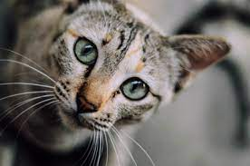
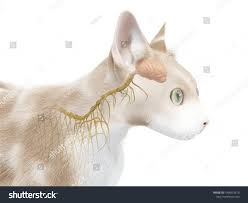
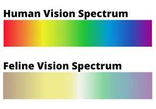
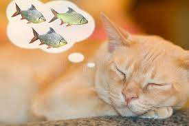

Whiskers:
Cats use their whiskers to determine if they can fit through a small space. The bigger the cat, the longer the whiskers will likely be. These sensitive tactile organs can detect air currents, transmit complex information about the movement and position of prey, and even serve as a measuring device — if a cat's whiskers can fit through an opening, chances are the rest of her body will go through too.

The cats brain:
Cats and humans have nearly identical sections of the brain that control emotions. Just like humans, cats have temporal, occipital, frontal and parietal lobes of their cerebral cortex. Each region is connected in the same way. Cats also receive input from the basic five senses and process that data just as humans do.
Why cats pur:
Scientist suggest that a cat's purr is a method of self-healing. While cats often purr in response to feeling happy, your cat might also purr as a way of self-healing. Vibration frequencies between 24 to 140 vibrations per minute are known to relieve pain, heal wounds, and promote bone growth in cats.

Do cats see color?:
With extensive research on the colors our cats can see, we know that cats do in fact see colors, but not in the same way that humans do. Their vision is not as vivid and doesn’t extend as far as the eyesight of humans—but their sight still outperforms ours due to the superior ability to see in the dark. While their world isn’t entirely black and white, it is dimmer in color than the world humans see. Additionally, cats are nearsighted. While most people are able to see up to 200 feet away, cats can only see up to 20 feet in front of them.

Cats and Dreams:
Did you know that cats dream? We know that cats dream because cats, like humans, experience rapid eye movement (REM) sleep. Cats can also be simultaneously asleep and awake, with their sense of smell and hearing remaining active during most of their sleep.